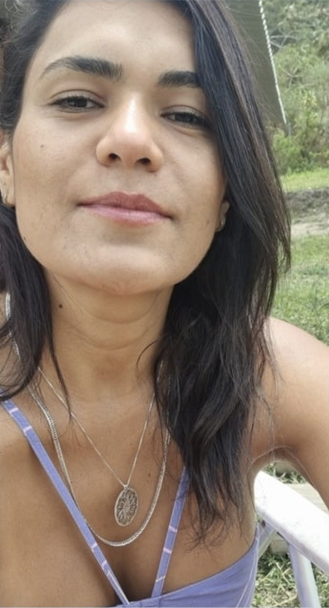
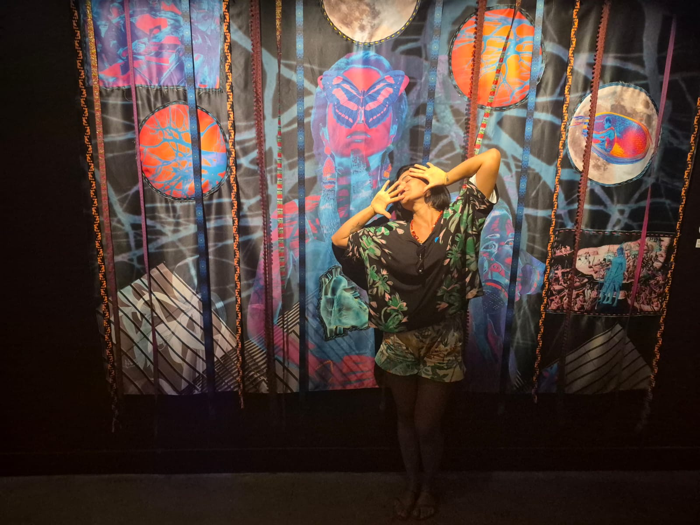

Você cuida de todo mundo.
Mas quando foi a última vez que cuidou de você?
Uma sessão de acolhimento para mulheres que estão funcionando por fora e pedindo socorro por dentro.
Você continua cumprindo tudo. O trabalho. A casa. As pessoas que dependem de você.
Mas existe um cansaço que não passa com descanso. Uma sensação de estar presente em todo lugar, menos dentro de si mesma.
Isso não é fraqueza.
É o sinal de que uma parte sua está esperando ser ouvida.
A sessão de acolhimento com a Glécia é um espaço seguro, gentil e profundo para você pausar, respirar e começar a se reconectar com o que realmente importa: você mesma.
Às vezes o maior cansaço não tem explicação óbvia.
Ele só… está lá.
Você acorda já pesada, mesmo tendo dormido.
Sua mente não desacelera, nem nos momentos de pausa.
Você é a primeira a ajudar os outros, mas raramente pede ajuda.
Sente que perdeu o fio de si mesma no meio de tantas responsabilidades.
Tem tudo pra estar bem, mas algo continua faltando.
Vive resolvendo problemas, mas ninguém resolve o seu.
Se alguma dessas frases tocou em algo, você não está sozinha. Muitas mulheres chegam à Glécia exatamente assim: funcionando por fora, pedindo socorro por dentro.
Não é te dizer o que fazer.
É criar um espaço onde você possa, talvez pela primeira vez em muito tempo, parar de performar e simplesmente ser.
Através da Psicologia Profunda, do trabalho corporal, da atenção consciente e da reconexão com a natureza, ela facilita um processo que vai além da conversa. É percepção. É sentir. É integrar.
É compreender padrões que operam em você de forma invisível, e começar a construir uma nova forma de se relacionar consigo mesma.
Corpo
Sua energia, descanso, movimento e vitalidade.
Emoções
Reconhecimento, regulação e segurança interna.
Mente
Clareza, percepção e organização dos pensamentos.
Propósito
Conexão, sentido e pertencimento à vida.
Quando esses pilares se fortalecem, o sistema inteiro começa a respirar diferente.
O que mulheres que passaram por esse processo começaram a sentir
Mais clareza nas decisões , sem aquela névoa constante de dúvida e sobrecarga.
Mais equilíbrio emocional , respondendo à vida em vez de só reagir a ela.
Menos ansiedade no dia a dia , porque você começa a entender de onde ela vem.
Reconexão com o próprio corpo , percebendo sinais que você aprendeu a ignorar.
Relacionamentos mais saudáveis , porque a relação mais importante começa em você.
Mais presença , de verdade, não só fisicamente.
A sensação de estar vivendo a própria vida , não apenas sobrevivendo a ela.
Histórias de reorganização interna
Cheguei sobrecarregada e emocionalmente esgotada. Ao longo do processo, algo começou a se reorganizar profundamente. Saí com uma sensação real de paz, leveza e equilíbrio.
Em meio à intensidade da vida corporativa, eu me sentia desconectada de mim mesma. O trabalho com a Glécia trouxe um processo real de integração: mais presença, mais leveza e uma reconexão com o feminino.
Em cada encontro, sentia a intensidade do trabalho e a profundidade das transformações acontecendo. É um trabalho que não apenas me tocou, mas que toca vidas.
Passei a reconhecer detalhes do meu dia a dia que antes me passavam despercebidos, e que hoje fazem diferença real na forma como vivo. É um processo que vai além do encontro.


Glécia
Há mais de 8 anos, Glécia facilita processos de transformação profunda com mulheres que aprenderam a se colocar por último.
Seu trabalho integra Psicologia Profunda, trabalho corporal, atenção consciente e reconexão com a natureza, um caminho que vai além da conversa, tocando o corpo, as emoções, a mente e o propósito.
Um espaço seguro para você parar de performar e simplesmente ser.
Sessão de Acolhimento
com Glécia
O que está incluído
- 1 sessão individual e personalizada
- Conduzida por Glécia, +8 anos de experiência
- Metodologia integrativa: Psicologia Profunda + corpo + natureza
- Espaço seguro para compreender o que está acontecendo em você
- Identificação de padrões que geram sofrimento ou desconexão
- Orientação sobre os próximos passos do seu processo
Online pelo Google Meet ou Zoom
ou presencial (consultar disponibilidade)
Talvez algo aqui esteja te segurando
O trabalho da Glécia não é só para momentos de crise. É para mulheres que sentem que algo pode ser diferente, mesmo que não saibam nomear o quê. Se você chegou até aqui, é porque uma parte sua já sabe que está na hora.
O processo da Glécia é diferente de uma abordagem clínica tradicional. Ele integra corpo, emoções, mente e propósito, e trabalha com o que fica escondido nas camadas mais profundas. Muitas clientes chegam exatamente com essa história.
A sessão de acolhimento é um ponto de partida, não uma obrigação. Uma hora. Você escolhe o horário. Sem pressão de continuidade, só um espaço pra você respirar e entender o que faz sentido.
É uma sessão individual, conduzida por quem tem mais de 8 anos facilitando transformações profundas. Não é uma conversa qualquer, é um espaço seguro criado especialmente pra você. E o que você vai descobrir sobre si mesma pode mudar o que você faz com os próximos anos da sua vida.
A Glécia conduz cada atendimento com cuidado, respeito e escuta real. Não existe julgamento. Não existe pressa. Você vai no ritmo que precisar.
Você não vai chegar até aqui e sair do mesmo jeito.
Se por qualquer motivo você sentir que a sessão não foi o que esperava, entre em contato. A Glécia está comprometida com sua experiência, e nenhuma mulher deve sair de um processo de cuidado sentindo que perdeu seu tempo ou seu dinheiro.
A agenda da Glécia tem vagas limitadas por mês para garantir a qualidade de cada atendimento.
Ainda com dúvidas?
O agendamento é feito pelo WhatsApp. Consulte os horários disponíveis e escolha o que melhor se encaixa na sua semana.
Sim. A sessão de acolhimento foi criada exatamente para quem está chegando pela primeira vez. Você não precisa saber nada antes. Só precisa aparecer.
Pelo Google Meet ou Zoom, num ambiente seguro e reservado. Você pode estar no conforto da sua casa, o que importa é a qualidade do espaço interno que vamos criar juntas.
Não. A sessão de acolhimento é um espaço em si mesmo. Se fizer sentido continuar, conversamos sobre isso ao final. Sem pressão, sem compromisso automático.
A combinar com a Glécia. (Sugestão: confirmar a duração (50 min, 1h ou 1h30) e atualizar aqui antes de publicar.)
A confirmar. (Sugestão: Pix e cartão de crédito via link de pagamento. Atualizar aqui antes de publicar.)
Entre em contato pelo WhatsApp com antecedência. A Glécia entende que a vida acontece.
Talvez você não precise de mais força.
Talvez você só precise parar, por uma hora, e voltar pra dentro.
Esse é o convite da Glécia. Um espaço só seu. Seguro. Gentil. Profundo. Você merece cuidado de verdade.
PS: Se você chegou até aqui, uma parte sua já reconheceu algo nessa página. Não ignore esse chamado.
A sessão de acolhimento é R$250. Uma hora. O seu ritmo. E o que você vai encontrar dentro de si mesma pode ser exatamente o que você estava procurando fora.